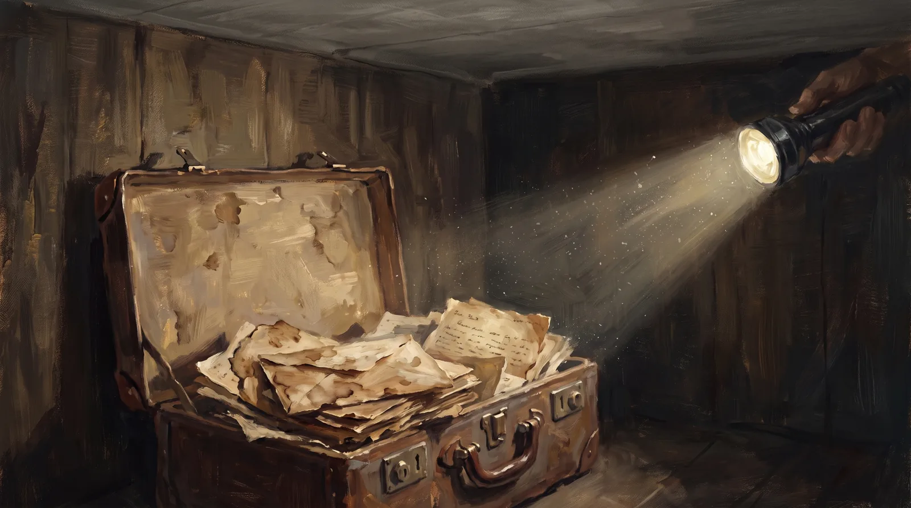

Questions Worth Asking
An archive built with AI should expect to be questioned — and should make the questioning easy. These are the questions this project gets, and the ones it thinks you should ask. None of the answers ask to be taken on faith: each ends at the part of the archive where you can check it yourself.
What is this, exactly?
A free interactive archive of the 272 surviving letters of one family’s Civil War — four brothers from Champlain, New York, writing home and to each other from 1861 to 1870, and their mother writing back. Every letter is transcribed in full, structured as data, cross-referenced against the historical record, and explorable through nine interactive views. No ads, no paywall, no account.
Enter the archive →Where did the letters come from — and are they real?
They never left the family. Frances Hubbell saved them as they arrived in the 1860s. Her descendants kept them: Gladys Sands Hubbell typed all of them on a typewriter in 1947–49, Fred Alexander Hubbell Jr. wrote the collection’s introduction in 1996, Bruce Levitt digitized the typescripts in the 2010s, and Alexander Hubbell Levitt structured, verified, and published them in 2026. The originals and typescripts remain in family hands.
How five generations kept them →How much of this did AI do — and what kept it honest?
The AI did the labor; humans made every judgment. The project’s working rule — “the AI is a filter, never a source” — means the model reads, sorts, proposes, and points, but nothing enters the record without a person verifying it against a document. The data is built so you can hold it to that: every letter keeps source facts, editorial judgment, and computed analysis in separate layers, so a reader can always tell which is which.
The method, in plain language →How accurate are the transcriptions?
AI vision read the 1947–49 typescripts and the surviving originals; a human reviewed every letter. The transcriptions preserve the writers’ own spelling and phrasing — the archive corrects the record around the letters, never the letters themselves. And a standing rule of the project: any excerpt quoted anywhere on this site must match, word for word, the transcription of the letter it cites, and every quote carries its letter’s ID so you can check.
Open the July 4, 1863 letter — written while burying the dead at Gettysburg →The letters name 486 people. How do you know who’s who?
Never by guesswork. “Alek,” “Alex,” “your brother,” and “the Captain” are resolved with hand-built identity tables — curated letter by letter by someone who knows the family — not by string-similarity matching, which would happily merge two strangers or split one man in two. The same discipline applies outward: when a soldier was checked against muster rolls and newspapers, same-name strangers were screened out and honest “not found” results were recorded as evidence, not failures.
See the web those identities make →Did the research change the family’s own story?
Yes — and those corrections are the archive’s proudest scars. The record confirmed most of what five generations handed down. But it also proved the family had remembered the wrong death date for James for 160 years: memory said October 19, 1865; rosters, period newspapers, and the brothers’ cemetery monument prove October 12. The 19th was the anniversary of his Cedar Creek wound — grief had fused two dates into one. Discrepancies like that are documented with their reasoning, alongside the family’s tradition — never silently overwritten.
Read James’s story →What surprised you most?
My great-great-great-grandmother’s letter of September 21, 1862. She wrote to Henry four days after Antietam, while she read the casualty lists “with trembling” — not knowing she was writing to a son who was already gone. I knew that fact for months before I sat with the letter itself, and the letter is different: it isn’t information, it’s a mother’s voice moving toward news that hasn’t reached her yet. Everything else this archive does — the maps, the data, the cross-referencing — exists to hold moments like that one steady.
Read Frances’s letter →How long did this take — really?
About four months of nights and weekends, starting in the spring of 2026 — alongside a full-time life, which is rather the point. The AI did the labor a research team once would have: reading every page, structuring 272 letters into consistent data, hunting candidate records across the archives. I did the judgment: verifying transcriptions, resolving who’s who, deciding what the evidence actually supports. The tools compressed the labor enormously. They compressed the judgment not at all — that part is still slow, and it should be.
The five-generation chain this joined →Is it free? Can I quote it, teach with it, or cite it?
Free, no ads, no paywall. The letter texts are in the public domain, and classroom and scholarly use is encouraged. Every letter carries a stable ID (LTR-YYYY-MM-DD-###) so citations don’t rot; the full citation format is on the About page. Press and media reproduction terms — including the credit line for excerpts and screenshots — are on the press page.
Media materials & reproduction terms →Could my family’s letters become something like this?
Yes — that is half the point of documenting the method. The letters don’t have to be from a war. What transfers is the discipline: keep the source separate from the judgment, verify everything against a document, and never let the tool invent what it cannot find. The tools improve by the month; the discipline is the part worth copying. If your family has a box, start by keeping it together — and if you want to talk about what it could become, ask.
Tell me about your box of letters →What’s next for the archive?
Two directions, and a third I’ll only tease. Down: the richest records — pension files and compiled service records at the National Archives, and the originals still in family hands — sit behind walls the free record can’t reach. Retrieving and digitizing them is the next layer of depth. Out: other families have boxes like ours. The method is documented carefully enough to hand to the next family — theirs won’t be Civil War letters, maybe, but the discipline transfers. And within the archive: new ways to experience what the brothers articulated, voiced, and shared across those four years. More on that when it’s ready.
A question this page doesn’t answer — or a correction? Write theaihubops@gmail.com. Corrections are welcomed; the archive’s method depends on them.